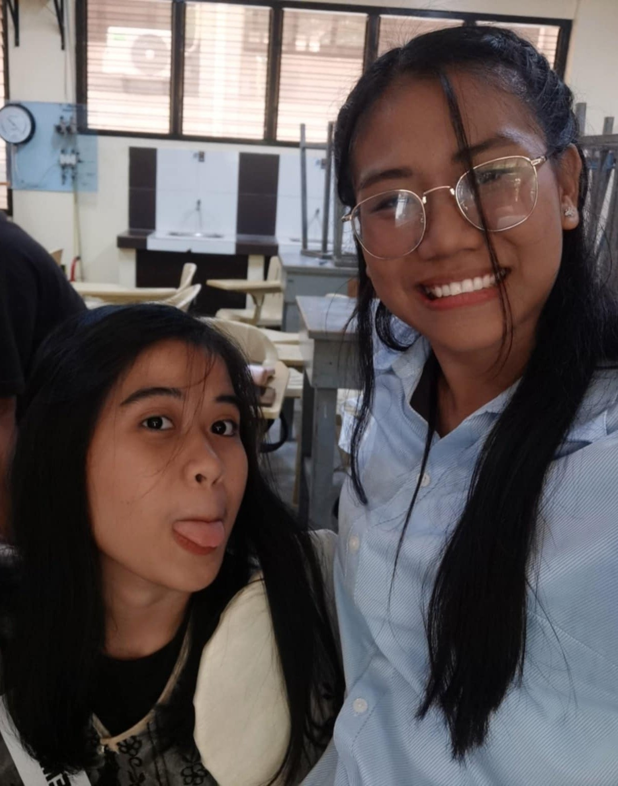
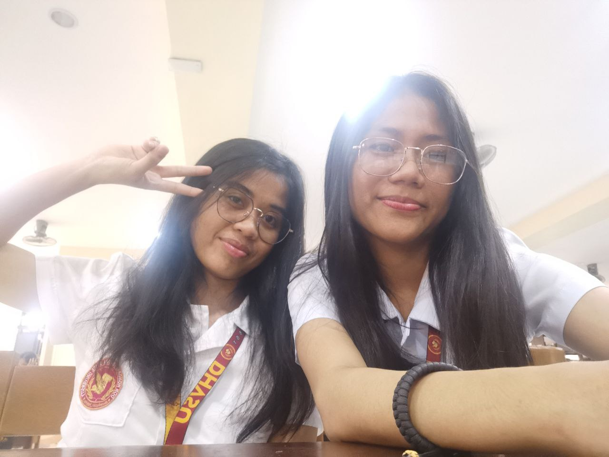
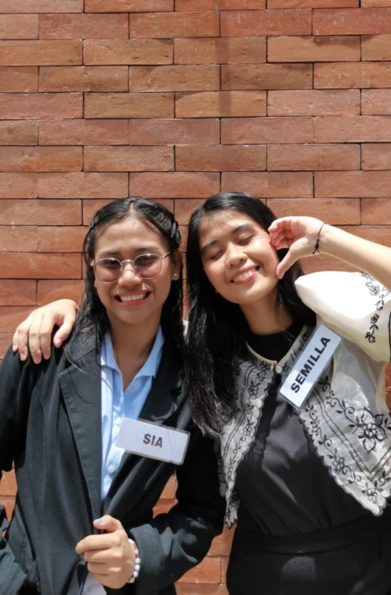

Hii!!!
Yow yoww! I can't believe nakagawa me ng ganto through the help of YouTube and ChatGPT haha. Sauur, na-open mo na siguro i2 and I just want to take this moment to say thank you, as in, soafer thank you. Thank you for being my friend through all these years. Wao HAHAHA. Looking back, I realized kung gaano ako ka-swerte to have someone like you in my college life. You're not just any friend. You’re the very first person who made me understand the true meaning and value of friendship.
You’ve shown me that friendship isn’t just about tawanan or fun times, but also about being there, kahit tahimik lang or ordinary moments lang. You’ve taught me what it means to truly care, to be present, and to stay, simply because you value the person.
I admire you so much. You’re so cool, in the truest sense of the word. Generous, genuine, and kind. You are beautiful in your own way. You're one of the brainiest and most talented people I know. That’s something I really look up to. Also, I know I have mentioned before na I had a crush on you and yeah, I really did. Not because of just how smart or cool you are, but because your humor and vibe were something I genuinely liked. gawd this is so cringeyy but I remember, tuwing may pasok datii, unang-una kitang hinahanap kung nasa room ka na ba or nasa dorm pa haha,but yeahh, yown i knoww di pwede soo I just kept it with me na lang and continued being friends with u. Though may time dati na iniiwasan ko maging super close sayo kase auq ma-attach nang sobra. Pero idk how but I think mas naging close pa us haha. You know naman na di ako ma-effort na friend pero ikawwwww super effort ka to keep and stay in friendships. Total opposite us kumbaga. I really wish na hindi mawala communication natin even after graduation. Sooooo thank you for staying and listening to all my worthless rants.
And of course, CONGRATS! GRADUATE NA TAYO!! I’m so proud of you, Engr. Caryl! Alam kong hindi naging madali, pero you did it—and you did it so well. You deserve all the recognition and success coming your way.
Thank you for everything. Sa mga tawa, kwento, and all the little moments that made our friendship special. I appreciate you more than you probably know, and I’m just really, really grateful that I get to call you my friend.
With all my thanks,
Glenda Sia


